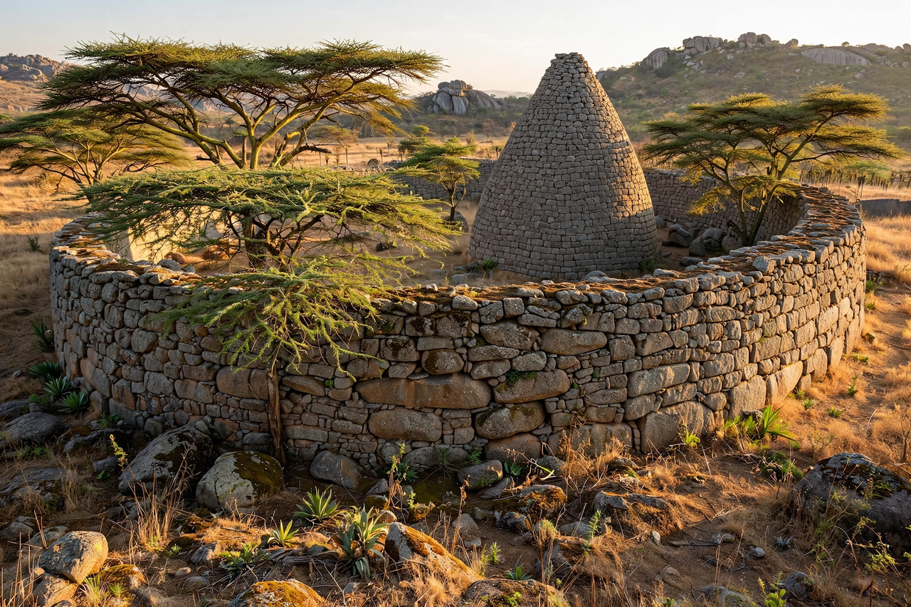

Great Zimbabwe

The dry-stone walls and Conical Tower of the Great Enclosure at Great Zimbabwe
Great Zimbabwe is a ruined medieval city in the south-eastern hills of Zimbabwe, near modern Masvingo — the largest ancient stone structure in sub-Saharan Africa and the capital of a Shona kingdom that flourished between the 11th and 15th centuries. Its massive dry-stone walls, built without mortar from fitted granite blocks, enclose the Hill Complex, the Great Enclosure with its mysterious Conical Tower, and the Valley Ruins. At its height the city housed perhaps 10,000–18,000 people and traded gold to the Indian Ocean coast at Sofala, whence goods reached India and China.
The city and its trade
Great Zimbabwe grew from a farming and cattle-keeping community into the centre of a gold-trading state. Finds include Chinese celadon and Persian pottery, glass beads and Arab coins — evidence of Indian Ocean commerce — while nearby goldfields supplied the trade. The Great Enclosure's outer wall, some 250 metres long and up to 11 metres high, and the solid Conical Tower (perhaps a symbolic grain-store or ritual form) remain unexplained in detail; soapstone birds on pillars, the Zimbabwe Birds, have become national symbols.
Abandonment and historiography
The city was abandoned around the mid-15th century, probably as resources, grazing and trade routes shifted north to the Mutapa state. European antiquarians of the colonial era refused to credit Africans with its construction, inventing Phoenician or biblical builders; professional archaeology (Randall-MacIver 1906, Caton-Thompson 1929) established its medieval Shona origin beyond doubt. The site gave the modern nation of Zimbabwe its name and its flag its emblem, and is a UNESCO World Heritage Site.